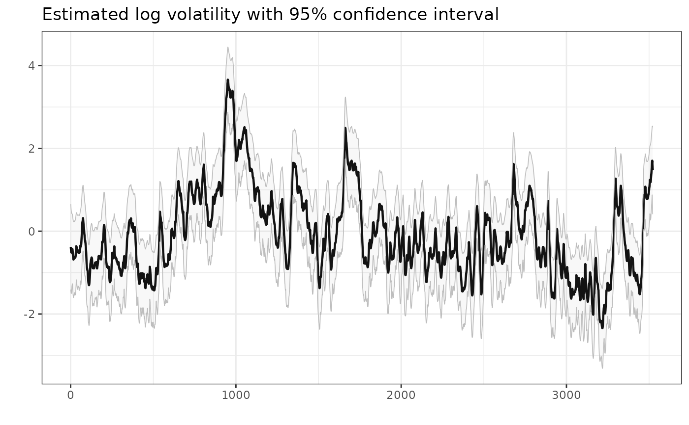

Estimate parameters of a stochastic volatility model with a latent log-volatility following an autoregressive process of order one with normally distributed noise. The following distributions are implemented for the observed process:
"gaussian": Gaussian distribution."t": t-distribution, scaled to unit variance. Estimates the degrees of freedomdf."leverage": Gaussian distribution where the noise of the latent process is correlated with the observational noise. Estimates the correlationrho."skew_gaussian": Skew gaussian distribution with mean zero and unit variance. Estimates the skewness of the observational noise."skew_gaussian_leverage": Skew gaussian distribution with leverage. The skew gaussian return shockz_tdrives the volatility shock,eta_t = rho * z_t + sqrt(1 - rho^2) * e_t, wheree_tis standard gaussian. Estimates both the skewness andrho."skew_t": Skew t distribution of Jones and Faddy (2003), scaled to mean zero and unit variance. The left and the right tail have their own degrees of freedom,df_leftanddf_right, so the model can have heavier tails for losses than for gains. With equal values it is the"t"model.
The parameters is estimated by minimizing the negative log-likelihood (nll) and the latent log-volatility is integrated out by applying the Laplace approximation.
Arguments
- data
A vector of observations.
- model
A character specifying the model. Must be one of the following: "gaussian", "t", "leverage", "skew_gaussian", "skew_gaussian_leverage", "skew_t".
- opt.control
An optional list of parameters for nlminb.
- ...
additional arguments passed to MakeADFun.
Skew gaussian models
The skew gaussian models report two numbers for the asymmetry of the standardized noise z:
alpha: the shape parameter of the skew normal density.alpha = 0gives the gaussian distribution andalpha -> Infthe half-gaussian distribution. It has no direct statistical meaning.skewness: the skewnessE[z^3]of the noise, a monotone function ofalpha. Withdelta = alpha / sqrt(1 + alpha^2)andmu = delta * sqrt(2 / pi),skewness = (4 - pi) / 2 * mu^3 / (1 - mu^2)^(3 / 2). For example,alpha= 0.5, 1, 2 and 5 giveskewness= 0.02, 0.14, 0.45 and 0.85.
The models estimate the skewness, not alpha. Close to zero the skewness grows like alpha^3, so the
likelihood is flat in alpha at alpha = 0 and the optimizer does not move from there.
Use summary(object, report = "transformed") to get skewness and alpha with standard errors.
Use skewness for inference. Use alpha when you need the shape parameter, for example in
sim_sv or sn::dsn. Close to zero skewness, alpha changes fast with the skewness, so
the standard error of alpha is very large even when the skewness is well determined. In the
"skew_gaussian_leverage" model the skewness is that of the return shock, not of the returns.
Skew t model
The left tail of the noise decays like a Student t distribution with df_left degrees of freedom and the
right tail like one with df_right degrees of freedom. A smaller value means a heavier tail. If
df_left < df_right, large losses are more likely than large gains of the same size, and the noise is
skewed to the left. Both values are greater than 2, so that the variance exists. They are estimated on the scale
log(df - 2).
A light tail is hard to tell apart from a gaussian tail. If one tail is light, its estimated degrees of freedom
can be very large and have a large standard error, and nlminb can report false convergence. This means
that the data show no heavy tail on that side. The same is true for df in the "t" model. In both
models the degrees of freedom are capped at 10,000, because the density cannot be calculated accurately for larger
values. Short series (a few hundred observations) can also confuse heavy tails with a very noisy log-volatility.
Hansen's (1994) skewed t distribution is not used, because its log density has a jump in the second derivative at the mode. This makes the Laplace approximation inaccurate and the optimization unstable.
References
Jones, M. C. and Faddy, M. J. (2003). A skew extension of the t-distribution, with applications. Journal of the Royal Statistical Society: Series B, 65(1), 159-174. doi:10.1111/1467-9868.00378
Examples
# \donttest{
# load data
data("spy")
# estimate parameters
opt <- estimate_parameters(spy$log_return, model = "gaussian")
#> Optimizing tape... Done
#> iter: 1 value: -518.7397 mgc: 0.5 ustep: 0.8994163
#> iter: 2 value: -3249.094 mgc: 0.4627596 ustep: 0.9483808
#> iter: 3 value: -6690.606 mgc: 26.88186 ustep: 0.973851
#> iter: 4 value: -7536.014 mgc: 9.171374 ustep: 0.9868402
#> iter: 5 value: -7667.061 mgc: 2.785227 ustep: 0.993399
#> iter: 6 value: -7674.419 mgc: 0.5889976 ustep: 0.9966944
#> iter: 7 value: -7674.472 mgc: 0.05386542 ustep: 0.998346
#> iter: 8 value: -7674.472 mgc: 0.0006770683 ustep: 0.9991727
#> iter: 9 value: -7674.472 mgc: 4.744788e-07 ustep: 0.9995863
#> iter: 10 mgc: 4.525418e-10
#> iter: 1 mgc: 4.525418e-10
#> Matching hessian patterns... Done
#> outer mgc: 2667.882
#> iter: 1 value: -7308.523 mgc: 2.126508 ustep: 1
#> iter: 2 value: -7321.684 mgc: 2.813364 ustep: 1
#> iter: 3 value: -7322.339 mgc: 0.9134244 ustep: 1
#> iter: 4 value: -7322.372 mgc: 0.2197633 ustep: 1
#> iter: 5 value: -7322.372 mgc: 0.02304708 ustep: 1
#> iter: 6 value: -7322.372 mgc: 0.0003275102 ustep: 1
#> iter: 7 value: -7322.372 mgc: 6.85841e-08 ustep: 1
#> iter: 8 mgc: 2.525757e-15
#> iter: 1 mgc: 2.525757e-15
#> outer mgc: 869.858
#> iter: 1 value: -9634.816 mgc: 4.686929 ustep: 1
#> iter: 2 value: -9652.94 mgc: 0.4549351 ustep: 1
#> iter: 3 value: -9653.015 mgc: 0.05617834 ustep: 1
#> iter: 4 value: -9653.015 mgc: 0.0008855719 ustep: 1
#> iter: 5 value: -9653.015 mgc: 1.864483e-07 ustep: 1
#> iter: 6 mgc: 1.099121e-14
#> iter: 1 mgc: 1.099121e-14
#> outer mgc: 288.7429
#> iter: 1 value: -10774.41 mgc: 0.5884098 ustep: 1
#> iter: 2 value: -10782.96 mgc: 0.2324301 ustep: 1
#> iter: 3 value: -10782.97 mgc: 0.01541454 ustep: 1
#> iter: 4 value: -10782.97 mgc: 7.987558e-05 ustep: 1
#> iter: 5 mgc: 1.550646e-09
#> iter: 1 mgc: 1.550646e-09
#> outer mgc: 199.2572
#> iter: 1 value: -13674.89 mgc: 15.67125 ustep: 1
#> iter: 2 value: -13679.75 mgc: 0.5364902 ustep: 1
#> iter: 3 value: -13679.76 mgc: 0.0408531 ustep: 1
#> iter: 4 value: -13679.76 mgc: 0.0002148026 ustep: 1
#> iter: 5 mgc: 4.034677e-09
#> iter: 1 mgc: 4.034677e-09
#> outer mgc: 265.4997
#> iter: 1 value: -11683.49 mgc: 34.78262 ustep: 1
#> iter: 2 value: -12964.22 mgc: 11.36328 ustep: 1
#> iter: 3 value: -13126.28 mgc: 3.084818 ustep: 1
#> iter: 4 value: -13131.02 mgc: 0.4830146 ustep: 1
#> iter: 5 value: -13131.02 mgc: 0.01806411 ustep: 1
#> iter: 6 value: -13131.02 mgc: 2.758614e-05 ustep: 1
#> iter: 7 mgc: 6.493872e-11
#> iter: 1 mgc: 6.493872e-11
#> outer mgc: 67.21735
#> iter: 1 value: 14193.58 mgc: 264.9149 ustep: 1
#> iter: 2 value: -5268.264 mgc: 96.08195 ustep: 1
#> iter: 3 value: -11490.71 mgc: 34.00822 ustep: 1
#> iter: 4 value: -13067.51 mgc: 11.2586 ustep: 1
#> iter: 5 value: -13291 mgc: 3.111348 ustep: 1
#> iter: 6 value: -13299.37 mgc: 0.5203654 ustep: 1
#> iter: 7 value: -13299.39 mgc: 0.02318142 ustep: 1
#> iter: 8 value: -13299.39 mgc: 5.17353e-05 ustep: 1
#> iter: 9 mgc: 2.591438e-10
#> iter: 1 value: 85014351 mgc: 694918.3 ustep: 1
#> iter: 2 value: 31255657 mgc: 255644.4 ustep: 1
#> iter: 3 value: 11480079 mgc: 94044.63 ustep: 1
#> iter: 4 value: 4206217 mgc: 34595.38 ustep: 1
#> iter: 5 value: 1531504 mgc: 12725.23 ustep: 1
#> iter: 6 value: 548747.7 mgc: 4679.657 ustep: 1
#> iter: 7 value: 188449.4 mgc: 1719.862 ustep: 1
#> iter: 8 value: 57156.64 mgc: 631.0291 ustep: 1
#> iter: 9 value: 10110.14 mgc: 230.4911 ustep: 1
#> iter: 10 value: -5987.547 mgc: 83.1607 ustep: 1
#> iter: 11 value: -10847.33 mgc: 28.99794 ustep: 1
#> iter: 12 value: -11903.93 mgc: 9.219552 ustep: 1
#> iter: 13 value: -12007.19 mgc: 2.271515 ustep: 1
#> iter: 14 value: -12008.9 mgc: 0.2735836 ustep: 1
#> iter: 15 value: -12008.9 mgc: 0.005481732 ustep: 1
#> iter: 16 value: -12008.9 mgc: 2.308705e-06 ustep: 1
#> iter: 17 mgc: 3.756995e-13
#> iter: 1 mgc: 2.591438e-10
#> outer mgc: 49.24074
#> iter: 1 value: 1735219 mgc: 14392.27 ustep: 1
#> iter: 2 value: 623284.3 mgc: 5292.915 ustep: 1
#> iter: 3 value: 215345.4 mgc: 1945.467 ustep: 1
#> iter: 4 value: 66394.56 mgc: 714.0438 ustep: 1
#> iter: 5 value: 12711.38 mgc: 261.0848 ustep: 1
#> iter: 6 value: -5962.444 mgc: 94.5096 ustep: 1
#> iter: 7 value: -11865.24 mgc: 33.28799 ustep: 1
#> iter: 8 value: -13315.19 mgc: 10.88491 ustep: 1
#> iter: 9 value: -13505.35 mgc: 2.942954 ustep: 1
#> iter: 10 value: -13511.34 mgc: 0.4614244 ustep: 1
#> iter: 11 value: -13511.35 mgc: 0.01738925 ustep: 1
#> iter: 12 value: -13511.35 mgc: 2.714278e-05 ustep: 1
#> iter: 13 mgc: 6.632472e-11
#> iter: 1 value: -13317.59 mgc: 9.754808 ustep: 1
#> iter: 2 value: -13494.33 mgc: 2.66813 ustep: 1
#> iter: 3 value: -13499.81 mgc: 0.4151355 ustep: 1
#> iter: 4 value: -13499.82 mgc: 0.01529037 ustep: 1
#> iter: 5 value: -13499.82 mgc: 2.253698e-05 ustep: 1
#> iter: 6 mgc: 4.894396e-11
#> iter: 1 mgc: 4.894396e-11
#> outer mgc: 48.43842
#> iter: 1 value: -17087.42 mgc: 40.02241 ustep: 1
#> iter: 2 value: -17090.62 mgc: 2.098011 ustep: 1
#> iter: 3 value: -17090.63 mgc: 0.105935 ustep: 1
#> iter: 4 value: -17090.63 mgc: 0.0004345381 ustep: 1
#> iter: 5 mgc: 7.684845e-09
#> iter: 1 value: -14239.14 mgc: 2.156487 ustep: 1
#> iter: 2 value: -14239.23 mgc: 0.06798454 ustep: 1
#> iter: 3 value: -14239.23 mgc: 0.0006077768 ustep: 1
#> iter: 4 value: -14239.23 mgc: 5.675519e-08 ustep: 1
#> iter: 5 mgc: 2.797762e-14
#> iter: 1 mgc: 2.797762e-14
#> outer mgc: 17.88563
#> iter: 1 value: -14275.16 mgc: 3.439111 ustep: 1
#> iter: 2 value: -14282.64 mgc: 0.5703941 ustep: 1
#> iter: 3 value: -14282.65 mgc: 0.02393677 ustep: 1
#> iter: 4 value: -14282.65 mgc: 4.696777e-05 ustep: 1
#> iter: 5 mgc: 1.823031e-10
#> iter: 1 value: -14323.54 mgc: 4.668762 ustep: 1
#> iter: 2 value: -14341.59 mgc: 0.9061735 ustep: 1
#> iter: 3 value: -14341.67 mgc: 0.05639916 ustep: 1
#> iter: 4 value: -14341.67 mgc: 0.00025732 ustep: 1
#> iter: 5 mgc: 5.494283e-09
#> iter: 1 mgc: 5.494283e-09
#> outer mgc: 7.54632
#> iter: 1 value: -14582.84 mgc: 4.10732 ustep: 1
#> iter: 2 value: -14602.52 mgc: 0.8759189 ustep: 1
#> iter: 3 value: -14602.61 mgc: 0.06000473 ustep: 1
#> iter: 4 value: -14602.61 mgc: 0.0003110204 ustep: 1
#> iter: 5 mgc: 8.257592e-09
#> iter: 1 mgc: 8.257592e-09
#> outer mgc: 21.03679
#> iter: 1 value: -14381.94 mgc: 1.722962 ustep: 1
#> iter: 2 value: -14396.48 mgc: 0.7583315 ustep: 1
#> iter: 3 value: -14396.53 mgc: 0.04381701 ustep: 1
#> iter: 4 value: -14396.53 mgc: 0.0001651584 ustep: 1
#> iter: 5 mgc: 2.346791e-09
#> iter: 1 mgc: 2.346791e-09
#> outer mgc: 5.4742
#> iter: 1 value: -14248.92 mgc: 0.3644133 ustep: 1
#> iter: 2 value: -14248.92 mgc: 0.002097827 ustep: 1
#> iter: 3 value: -14248.92 mgc: 8.732636e-07 ustep: 1
#> iter: 4 mgc: 1.139921e-13
#> iter: 1 mgc: 1.139921e-13
#> outer mgc: 4.152372
#> iter: 1 value: -13894.82 mgc: 2.46986 ustep: 1
#> iter: 2 value: -13895.15 mgc: 0.1842707 ustep: 1
#> iter: 3 value: -13895.15 mgc: 0.001999766 ustep: 1
#> iter: 4 value: -13895.15 mgc: 2.863974e-07 ustep: 1
#> iter: 5 mgc: 2.484124e-14
#> iter: 1 mgc: 2.484124e-14
#> outer mgc: 7.529715
#> iter: 1 value: -14019.43 mgc: 1.110178 ustep: 1
#> iter: 2 value: -14019.49 mgc: 0.06441403 ustep: 1
#> iter: 3 value: -14019.49 mgc: 0.0002808332 ustep: 1
#> iter: 4 mgc: 5.704332e-09
#> iter: 1 mgc: 5.704332e-09
#> outer mgc: 1.950142
#> iter: 1 value: -14021.12 mgc: 0.08605243 ustep: 1
#> iter: 2 value: -14021.12 mgc: 0.0007436174 ustep: 1
#> iter: 3 value: -14021.12 mgc: 5.106112e-08 ustep: 1
#> iter: 4 mgc: 1.909584e-14
#> iter: 1 mgc: 1.909584e-14
#> outer mgc: 0.6931225
#> iter: 1 value: -14008.91 mgc: 0.1535717 ustep: 1
#> iter: 2 value: -14008.91 mgc: 0.001254491 ustep: 1
#> iter: 3 value: -14008.91 mgc: 1.121227e-07 ustep: 1
#> iter: 4 mgc: 2.287059e-14
#> iter: 1 mgc: 2.287059e-14
#> outer mgc: 0.4663906
#> iter: 1 value: -14012.07 mgc: 0.05525393 ustep: 1
#> iter: 2 value: -14012.07 mgc: 0.0001900684 ustep: 1
#> iter: 3 mgc: 2.686444e-09
#> iter: 1 mgc: 2.686444e-09
#> outer mgc: 0.009571565
#> iter: 1 value: -14012.39 mgc: 0.0004823436 ustep: 1
#> iter: 2 value: -14012.39 mgc: 2.455773e-08 ustep: 1
#> iter: 3 mgc: 2.398082e-14
#> iter: 1 mgc: 2.398082e-14
#> outer mgc: 0.00150391
#> iter: 1 value: -14012.34 mgc: 0.000210811 ustep: 1
#> iter: 2 mgc: 5.694218e-10
#> iter: 1 mgc: 5.694218e-10
#> outer mgc: 1.882717e-05
#> iter: 1 mgc: 5.694218e-10
#> iter: 1 mgc: 5.694218e-10
#> outer mgc: 1.882717e-05
#> iter: 1 value: -14012.33 mgc: 0.01176656 ustep: 1
#> iter: 2 value: -14012.33 mgc: 1.148112e-05 ustep: 1
#> iter: 3 mgc: 1.082334e-11
#> outer mgc: 0.1255662
#> iter: 1 value: -14012.34 mgc: 0.01179012 ustep: 1
#> iter: 2 value: -14012.34 mgc: 1.146738e-05 ustep: 1
#> iter: 3 mgc: 1.079847e-11
#> outer mgc: 0.1256039
#> iter: 1 value: -14009.08 mgc: 0.01076756 ustep: 1
#> iter: 2 value: -14009.08 mgc: 1.098022e-06 ustep: 1
#> iter: 3 mgc: 7.222001e-14
#> outer mgc: 0.2343707
#> iter: 1 value: -14015.59 mgc: 0.01078912 ustep: 1
#> iter: 2 value: -14015.59 mgc: 1.099169e-06 ustep: 1
#> iter: 3 mgc: 7.283063e-14
#> outer mgc: 0.2342712
#> iter: 1 value: -14012.37 mgc: 0.0006408069 ustep: 1
#> iter: 2 value: -14012.37 mgc: 1.920305e-08 ustep: 1
#> iter: 3 mgc: 2.575717e-14
#> outer mgc: 0.05729559
#> iter: 1 value: -14012.31 mgc: 0.0006414345 ustep: 1
#> iter: 2 value: -14012.31 mgc: 1.924445e-08 ustep: 1
#> iter: 3 mgc: 2.176037e-14
#> outer mgc: 0.05736341
#> outer mgc: 0.2224402
# get parameter estimates with standard error
estimates <- summary(opt)
# plot estimated volatility with 95 % confidence interval
plot(opt, include_ci = TRUE)

# skew gaussian model with leverage
opt_sgl <- estimate_parameters(spy$log_return, model = "skew_gaussian_leverage", silent = TRUE)
summary(opt_sgl, report = "transformed")
#> parameter estimate std_error z_value p_value type
#> <char> <num> <num> <num> <num> <char>
#> 1: sigma_y 0.007951179 0.0003805306 20.89498 5.948133e-97 transformed
#> 2: sigma_h 0.276811702 0.0178393398 15.51693 2.665194e-54 transformed
#> 3: phi 0.971016377 0.0038900968 249.61239 0.000000e+00 transformed
#> 4: skewness -0.404691018 0.0391237332 -10.34388 4.461237e-25 transformed
#> 5: alpha -1.829728834 0.1306960204 -13.99988 1.561303e-44 transformed
#> 6: rho -0.837199898 0.0226025004 -37.04015 2.587850e-300 transformed
# }